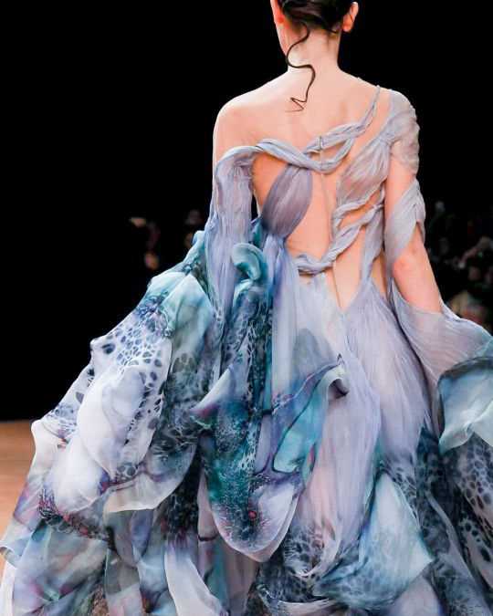
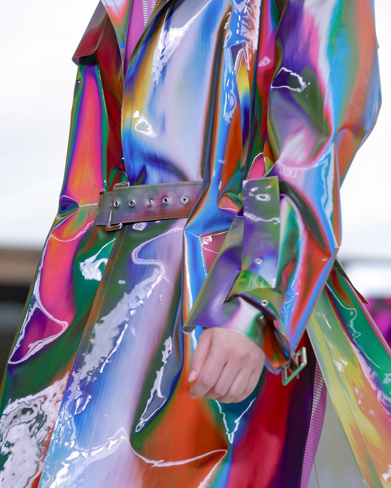

Avant Garde
Issey Miyake / Spring 1994

Iris Van Herpen / Haute Couture Spring 2020

Manuel Facchini / Byblos Fall/Winter 2019
about
Avant Garde fashion is characterized by the use of eccentric, unorthodox, and experimental design
choices. Often, pieces in this sector of fashion resemble sculptural artworks more than articles of clothing. Avant
Garde peices seldom look practical, or even appealing, but they certainly always turn heads and cause us to rethink
the bounds by which we define fashion.